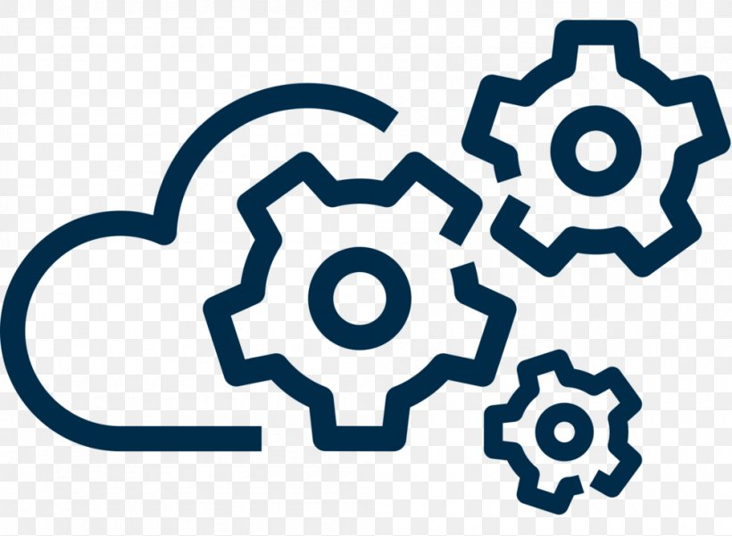
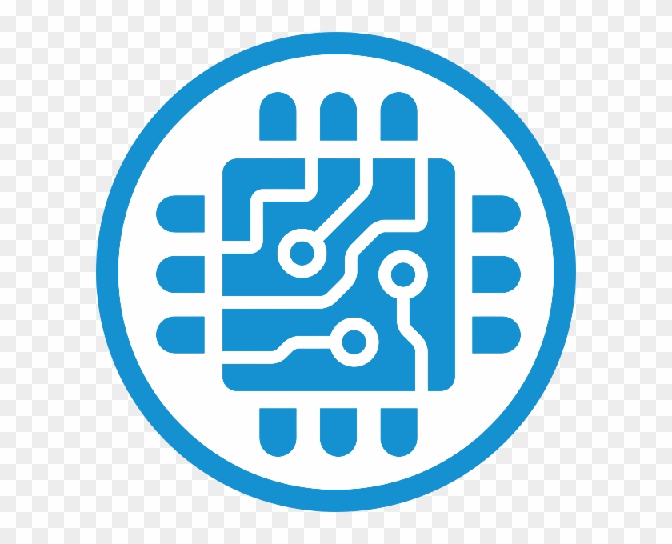

Apa Itu Teknologi dan Informasi?
Teknologi adalah segala alat atau metode buatan manusia untuk mempermudah pekerjaan.
Informasi adalah data yang sudah diolah sehingga bisa dipahami dan digunakan.
Kalau digabung, jadilah Teknologi Informasi (TI), yaitu penggunaan teknologi untuk mengolah, menyimpan, dan
menyebarkan informasi dengan cepat dan mudah.
manfaat belajar teknologi dan informasi
Komunikasi Lebih Mudah
Dengan adanya teknologi informasi, komunikasi bisa dilakukan kapan saja dan di mana saja. Mulai dari chat,
email, sampai
video call,
semuanya membuat orang tetap terhubung meskipun terpisah jarak dan waktu.

Akses Informasi Cepat
Internet memudahkan kita menemukan data dan pengetahuan hanya dalam hitungan detik.
Informasi yang dulu susah dicari kini bisa diakses dengan mudah lewat mesin pencari,
aplikasi, dan platform digital.

Mendukung Pendidikan
E-learning, aplikasi belajar online, hingga video pembelajaran membuat proses belajar
jadi lebih fleksibel. Siswa maupun mahasiswa
bisa belajar di mana saja tanpa harus selalu hadir di kelas.
sejarah teknologi dan informasi
Zaman Kuno
Pada masa kuno, teknologi komunikasi masih sangat sederhana. Manusia menggunakan simbol, gambar pada dinding gua, ukiran batu, serta tulisan kuno di atas papirus atau perkamen sebagai sarana untuk menyampaikan informasi. Meski terlihat primitif, inilah fondasi awal dari penyimpanan serta penyebaran informasi. Informasi yang disampaikan masih terbatas dan sering hanya bisa dipahami oleh kelompok tertentu, namun keberadaannya membuka
jalan bagi perkembangan
pengetahuan generasi berikutnya.
Revolusi Industri
Memasuki era Revolusi Industri pada abad ke-18 hingga ke-19, perkembangan teknologi mengalami lompatan besar. Penemuan mesin cetak oleh Gutenberg dan berkembangnya teknologi mekanis membuat penyebaran informasi menjadi lebih cepat dan masif. Buku, surat kabar, serta dokumen dapat diproduksi dalam jumlah banyak dengan waktu yang lebih singkat. Hal ini membuka akses pengetahuan ke masyarakat luas, memicu pertumbuhan literasi, serta mempercepat
penyebaran ide dan inovasi ke berbagai belahan dunia.
Abad ke-20
Abad ke-20 menjadi tonggak penting bagi kemajuan teknologi komunikasi dan informasi. Munculnya radio, telepon, dan televisi mengubah cara manusia berkomunikasi, tidak lagi terbatas oleh jarak dan waktu. Perkembangan komputer kemudian membawa revolusi baru, di mana data dapat diolah secara cepat dan akurat. Manusia mulai bisa berinteraksi melalui perangkat elektronik, menyimpan data dalam jumlah besar, serta mengakses informasi dari berbagai sumber. Abad ini menjadi era awal globalisasi komunikasi,
di mana dunia terasa semakin dekat dan terhubung.
Era Internet
Pada awal tahun 1990-an, internet lahir dan membawa perubahan besar dalam sejarah teknologi informasi. Internet merevolusi cara manusia mengakses, menyebarkan, dan memanfaatkan informasi. Melalui internet, komunikasi dapat dilakukan secara real-time tanpa batasan jarak, baik melalui email, media sosial, maupun aplikasi pesan instan. Pertukaran data, transaksi bisnis, pembelajaran online, hingga hiburan digital menjadi bagian tak terpisahkan dari kehidupan sehari-hari. Era internet juga melahirkan peluang baru seperti e-commerce, cloud computing, kecerdasan buatan, dan Internet of Things (IoT)
yang terus berkembang hingga saat ini.
dampak positif
Perkembangan teknologi dan informasi membawa banyak dampak positif bagi kehidupan manusia. Informasi kini dapat diakses dengan cepat, komunikasi menjadi lebih mudah melalui media digital, dan aktivitas belajar maupun bekerja bisa dilakukan secara online dengan efisien. Selain itu, muncul banyak peluang baru di bidang bisnis dan kreativitas digital yang meningkatkan kualitas hidup masyarakat di berbagai
aspek seperti
kesehatan, transportasi, dan hiburan.
dampak negatif
Di sisi lain, perkembangan teknologi dan informasi juga membawa dampak negatif. Banyak orang menjadi kecanduan gadget dan media sosial hingga mengurangi interaksi langsung. Penyebaran informasi palsu atau hoaks semakin marak, dan ancaman terhadap privasi serta keamanan data pribadi meningkat. Selain itu, ketergantungan terhadap teknologi membuat manusia kurang mandiri dan
mudah terganggu saat
terjadi gangguan sistem atau koneksi.
kesimpulan
Perkembangan
teknologi dan informasi telah membawa perubahan
besar dalam kehidupan manusia. Teknologi memudahkan segala
aspek kegiatan, mulai dari komunikasi, pekerjaan, hingga hiburan. Namun, kemajuan ini juga perlu diimbangi dengan kesadaran dan tanggung jawab dalam penggunaannya agar manfaatnya bisa dirasakan
tanpa menimbulkan dampak
negatif bagi diri sendiri maupun orang lain.